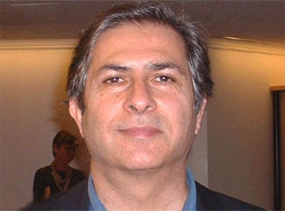

پذيرش > سایت نوشته ها > حقوق شهروندی، محتوای دموکراسی است
 گفتگو با مهرداد مشایخی گفتگو با مهرداد مشایخی

 حقوق شهروندی، محتوای دموکراسی است حقوق شهروندی، محتوای دموکراسی است
29 آبان 1387 - رادیو زمانه - نسخه قابل چاپ
زمانه: آنچه که در زیر میآید بخش نخست متن مصاحبهای است که در ماه جولای گذشته توسط تعدادی از خبرنگاران درون مرزی با دکتر مشایخی انجام گرفته است. این مصاحبه اما امکان انتشار در نشریات کشور را نیافت.
آقای دکتر مشایخی، شما در مقاله اخیرتان- از اصلاحطلبی حکومتی تا جنبش حقوق شهروندی- فوریه ۲۰۰۸، سایت ایران امروز- روند دموکراسیخواهی در ایران را محتاج «نوآوری» دانستهاید. از نظر شما چرا ایران بعد از دوران اصلاحات که با امید به ارتقاء سطح دموکراسی در کشور آغاز شده بود با توجه به جریان کنونی جامعه نیازمند نوآوری در عرصه مبارزه دموکراسیخواهانه شده است؟
دههی ۱۳۷۰ در عام، و سالهای پس از بسیج گسترده دوم خرداد، بهطور اخص، بیانگر چرخشی ملموس در فرهنگ سیاسی روشنفکران، بخشهائی از مردم، و نیز جناحی از حکومتگران بود. دموکراسی خواهی که بیش از چهار دهه زیر سنگینی رادیکالیسم و انقلابی گری مدفون شده بود، بتدریج، امکانی برای تنفس پیدا کرد.
در فضای برآمده از قدرت گیری اصلاح طلبان، دستکم برای ۳ سال فرصتی پدید آمد که موضوع دموکراسی هم از حیث نظری مطرح شود و هم در گستره ای رو به رشد تمرین بشود. اما، به دلائلی که امروز بر همگان آشکار است، اصلاح طلبان حکومتی موفق به پیاده کردن طرحهای خود نشدند.
در این شکست موانع متعددی موجود بودند. از جمله: الف- توازن حقیقی قوا درون بلوک قدرت هنوز به نفع اصلاح طلبان نبود؛ ب- فرهنگ سیاسی عوام (بهویژه بخشی از جامعه که با هویت «توده» و «خلق» به میدان میآید) دچار تحول ارزشی نشده بود؛ پ- مرز میان اصلاحات مورد نظر و دموکراتیک سازی مبهم و تعریف نشده بود. اصلاح طلبان تلاش درخوری برای تعریف «دموکراسی» مورد نظرشان («دموکراسی دینی») و نقشه راه دستیابی به آن بخرج ندادند.
به هر حال، ۸ سال دوره خاتمی به سرعت سپری شد بدون آن که مبحث دموکراسی واقعا باز شود. در میان روشنفکران سکولار دموکرات هم بحث دموکراسی بیشتر به صورت یک غایت مطلوب طرح میشود؛ غایتی که مرزهای هویتی میان سکولارها و طرفداران «دموکراسی دینی» را تعیین میکرد.
تلاشهائی که به صورت مکتوب به مفاهیم دموکراسی و دموکراتیک سازی بپردازند، و یا مهم تر از آن، کاربرد آن را در شرایط مشخص ایران توضیح دهند، اندک بودند. شماری از کتابهای معتبر غربی البته، ترجمه شدند، ولی کاربرد و ارتباط آنها برای سعادت اکثریت مردم توضیح داده نشدند. اکثریت مردم، متأسفانه، دموکراسی خواهی را بمثابه رقیبی در مقابل «عدالت خواهی» مورد نگرش قرار داد.
بنابراین، مراد من از «نوآوری» در زمینه دموکراسی خواهی، هم فراتر رفتن از سطح کلیات گفتمانی به سطح مباحث و تفسیرهای خاص دموکراسی و دیگر، یافتن عاملهائی اجتماعی است که بتوانند به زمینهسازی و نهادسازی برای امر دموکراسی بپردازند.
مثلا، چرا ایران را آماده (و یا احیانا غیر آماده) پیشبرد یک پروژه دموکراتیک میدانیم. استدلالهای بنیادین ما کدامند؟ و بالاخره، از فرصتها و ظرفیتهای بسیار اندک موجود چگونه میتوان فرآیند دموکراتیک سازی را آغاز کرد.
زمینهها و الزامات چنین نوآورییی چیست؟ به نظر میرسد نقد اشکال قبلی کنشگری و طراحی راهکارهای جدید را بتوان مبنای این نوآوری دانست، اگر اینگونه است مسیر چنین آسیبشناسی حساسی را چگونه ترسیم میکنید؟
بله، طبعا زمینه چینی برای یک نوآوری محتاج نقد تلاشهائی است که در چند دهه اخیر صورت گرفته اند. نقدهای بسیاری بر حرکت اصلاح طلبی حکومتی نوشته شده اند. اما اکثر آنها از منظر دموکراسی خواهی و یا حقوق شهروندی به نقد ننشسته اند.
مثلا عنوان کرده اند که آنها ضعیف عمل کرده اند، یا آقای خاتمی مرد این میدان نبوده و یا آنها پیوندهای گوناگونی با اقتدارگرایان داشته اند و نظائر آن. اینها البته درست هستند ولی ضعف دموکراسی خواهی را در میان اصلاح طلبان ترسیم نمیکند.
احتیاج به نقدی منسجم هست که ضعف دموکراسی خواهی آنها را بطور مشخص بیان کند. در عین حال، ما هنوز با دیدگاههای سکولار مارکسیستی، ملی گرایی افراطی و نظائر آن در مورد دموکراسی به بحث نظری ننشسته ایم.
اگر باور داشته باشیم که پیشبرد دموکراسی در ایران نیازمند دو عنصر است: نیروهای جامعه مدنی دموکراسی خواه و، همچنین، جناحی از حکومتگران که با نظام دموکراتیک قهر نباشند و منافع آتی خود را در آن متحقق ببینند؛ در آن صورت، تحول فکری – برنامه ای اصلاح طلبان یک ضرورت جدی برای جامعه ما است. البته در چند سال اخیر، شاهد آغاز چنین مبحثی در میان شماری از شخصیتهای کلیدی اصلاح طلب بودهایم. این امر را باید به فال نیک گرفت.
شما در بخشی از مقالهتان اشاره میکنید که «مبارزات مدنی و مسالمتآمیز مردم ایران برای دگرگونیهای ساختاری از دل چالشگری نیروهای جامعه مدنی بیرون میآید». آیا میتوان از این گزاره نتیجه گرفت که ما برای ایجاد نوآوری در روند فعالیت سیاسی و بهبود حرکت دموکراسیخواهانهمان نیازمند نوعی «جنبش اجتماعی» هستیم؟ اگر پاسخ مثبت است چه فرد یا افرادی باید در راستای ایجاد و تقویت این جریان فعالیت کنند؟ نقش نهادها و فعالان مدنی در پیدایش این نوآوری چگونه است؟
طبیعی است که برای قوام گرفتن حرکت دموکراسی خواهانه ما محتاج عاملهائی انسانی هستیم که مولد انرژی فرهنگی - اجتماعی - سیاسی باشند. نه دولتهای خارجی میتوانند ایران را دموکراتیزه کنند و نه نخبگان در قدرت (ولو آن که دموکرات هم شوند) به تنهائی. بار اصلی این تلاش تاریخی را میباید گروههای اجتماعی و جنبشهای آنها حمل کنند.
ممکن است هر یک از این «خُرده جنبش»ها به تنهائی حامل نقشه راه کامل نباشند. اشکالی ندارد. موفقیت، ولو نسبی، هر یک از آنها، میتواند انگیزه، انرژی، فکر، برنامه و امید به آینده، برای دیگران ایجاد کند. رابطه میان افراد، شخصیتها، و جنبشها از پیش قابل پیش بینی نیست.
برخی جنبشها ممکن است از شخصیت فره مندی بهره گیرند. دیگران ممکن است تلاش خود را جمعی تر ارائه دهند و شخصیتها، بتدریج، در جای خود قرار گیرند. به هر حال، آغاز جنبشها، همیشه محتاج هدایت و خلاقیت شماری از افراد باتجربه تر و آگاه تر است.
هر یک از خرده جنبشها در ابتدا برای کسب حقوق شهروندی معین و مشخصی به میدان میآیند: زنان، معلمان، کارگران، اقلیتهای قومی، دانشجویان، هنرمندان. طبعا موفقیت نسبی هر یک از آنها در نهادینه کردن حقوق حقه شان یک نوع پایه ریزی برای دموکراسی ریشه ای است.
ولی موانع کار و تجربه مشترک این خرده جنبشها، به آنها میآموزد که، در نهایت، بدون تشکیل یک جنبش فراگیر، یا «جنبش رنگین کمانی» و یا «جنبش جنبشها» موفقیتهای جدی به دست نخواهد آمد. یعنی دموکراسی در ساختارهای سیاسی و حقوقی ریشه نخواهد گرفت.
چالشها و موانع پیش روی مهندسی شیوههای نو یا آن طور که شما میگویید «نوآوری» در راه مبارزه برای استقرار دموکراسی در جامعه ایرانی کدامند؟
عمدهترین موانع دموکراتیک سازی در ایران، به ترتیب عبارتند از ساختارها و مناسبات سلطه، از نهادهای حکومتی بگیریم، تا نهادهائی که ناظر بر مناسبات میان شهروندان هستند، نظیر خانواده و مناسبات قومی. به هر رو، حکومتها در ایران، از حیث تاریخی، کمترین تأثیر را از دموکراسی گرفته اند.
رانت نفتی هم مزید بر علت شده و نقش استبدادی و اقتدار حکومتی را تقویت کرده است. دموکراتیک سازی، البته، از حکومت آغاز میکند ولی نمیتواند نسبــت به سایـر حیطههای اجتماعی بی تفاوت باشد.
دوم، از ارزشها و گفتمانهای فرهنگیمان باید صحبت کنیم که هنوز سنخیت چندانی با مبانی دموکراسی ندارند. البته اخیرا تکانهائی خوردهاند و از قدرت مشروعیت بخشی شان در تحکیم مناسبات سلطه و نابرابری کاسته شده ولی هنوز محتاج پالایش فرهنگی در سطحی گسترده هستیم.
فرهنگ سیاسی هم به همین ترتیب کارکرد دارد. هنوز مفاهیم کهن در این فرهنگ سیاسی حضوری قابل ملاحظه دارند: فرادستی تکلیف (در برابر حق)، تفسیرهای جنگ سردی از «استقلال ملی»، آمریکاستیزی، ریشسفیدی و چانهزنی (در برابر مذاکره و مصالحه)، زنستیزی، تبعیضگری علیه برخی مذاهب و اقوام، دیگرنمایی و عدم شفافیت، توهم توطئه، عدم همکاری، و بسیاری دیگر. اینگونه فرهنگ مسلما مانعی در برابر شکلگیری مفهوم «شهروند»، «حق» و «دموکراسی» خواهد بود.
مشکل زمانی مضاعف میشود که روشنفکران هم نتوانند خود را از شر چنین سنتهایی رها سازند. بخش قابل توجهی از روشنفکری ما، بویژه در نسلهای مسنتر، هنوز با بسیاری از این مفاهیم تصفیه حساب جدی نکرده است.
به گمان من، شبکههای جنبشی که حول احقاق حق و ضدیت با هر نوع تبعیض (ولو در سطحی محدود) درگیر پراتیک شوند هم فرهنگ را متحول میسازند و هم مناسبات اجتماعی را. تغییر ارزشهای فرهنگی هم محتاج کار فکری است و هم باید در پراتیک اجتماعی بازتاب پیدا کند.
آیا مصداقی هم برای این موضوع در ذهن دارید؟ اساسا آیا هیچ کنشگری اجتماعی وجود دارد که توانسته تا این حد در راه تغییر مناسباتی که از آنها سخن گفتید قدم بردارد و نوآور باشد؟
در حال حاضر کمپین برای یک میلیون امضاء یکی از بهترین مصداقهای چنین تلاشی است. نوآوری در بسیاری از عرصههای فعالیتی آن بچشم میخورد. از آنجا که به برابری حقوقی نظر دارد میتوان آنها را دموکراتیک، برابری طلب، اصلاح گر، مسالمت آمیز، ضد تبعیض و جنبشی خواند. شکل سازماندهی آن غیر متمرکز و منعطف است؛ شخصیت محور نیست و از تمامی فضاها و امکانات موجود استفاده بهینه میکند تا پیام خود را به گوش جامعه برساند.
ایجاد فضایی جهت گفت و گوی باز، دموکراتیک، عقلانی و اثربخش و در کنار آن نقد، گفتگو، تعامل و طراحی مجدد بر پایه یک کار گروه مطالعاتی میان نیروهای تحولخواه ایرانی (از تمامی طیفها) چه تأثیری بر شکلگیری نوآوری سیاسی خواهد داشت؟
روشنفکری سیاسی دموکرات ایران از گفتمان اصلاح طلبی (حکومتی) عبور کرده است ولی هنوز جا پای خود را درون یک گفتمان دموکراتیک بدیل متکی بر حقوق شهروندی مستحکم نساخته است. به یک معنی آن را در یک دوران گذار میتوان فرض کرد که بیشتر پسا اصلاحطلب Post – Reformist)) است تا هر چیز دیگری.
ولی این پسا اصلاح طلبی سرانجام، میباید حول دموکراسی خواهی شهروند مدار آرام گیرد و خود را تعریف کند. برای این کار روشنفکران، از سوئی میباید از آخرین روندها و تحولات جامعه غافل نباشند و از آنها درس گیرند.
از سوی دیگر، نیاز مشخص به پراتیک نظری و مطالعاتی وجود دارد. من هم بر این باورم که یک گفتگوی سازمان یافته، منظم و هدفمند حول موضوع پیشبرد فرآیند دموکراسی در ایران یک ضرورت غیر قابل انکار است. شاید در ابتدای کار، یک توافق اولیه روی موضوع یک پیش شرط لازم باشد.
پیشبرد و ادامه بحث بسیار آسان تر از شروع و برنامه ریزی برای آن است. ارتباطات شبکه ای و اینترنتی بحث و گفتوگو میان طیفهای مختلف را بسیار تسهیل کرده است. موانع این امر بیشتر ذهنی و درونی است. در واقع باید «چشمها را شست».
ادامه دارد...
رادیو زمانه
ارسال به
بالاترین
،
توییتر
،
فریندفید
،
فیسبوک
در همين بخش :
 یک خبر تلخ؟ یک قانونشکنی؟ یک تصمیم بخشنامهای جدید؟ یک خبر تلخ؟ یک قانونشکنی؟ یک تصمیم بخشنامهای جدید؟
چرا بایست به سکسوالیته پرداخت؟ / نفیسه آزاد
آزارجنسی خانگی؛ «قربانی» نه، «نجات یافته»
زنان، بزرگترین بازندگان بهار عرب
سانسور از دیدگاه جنسیتی/الهه امانی
ديگر بخش ها :
طرح یک میلیون امضا
|
مقالات
|
سایت نوشته ها
|
اخبار
|
گزارش كمپين
|
گفت و گو
|
علیه سکوت
|
كوچه به كوچه
|
نامه های شما
|
گزارش ویژه
|
گفتگو با اعضا
|
ویژه سالگرد کمپین
|
تصویر برابری
|
دل آرام علی
|
تریبون
|
مقالات
|
تاریخ شفاهی
|
خارج از چارچوب
|
کتابخانه
|
درباره کمپین
|
کمپین در شهرها
|
کمپین در بند
|
صدای تغییر
|
ویژه 22 خرداد
|
لایحه حمایت از خانواده
|
گالری
|
عشا مومنی
|
امیر یعقوبعلی
|
خدیجه مقدم
|
راحله عسگری زاده و نسیم خسروی
|
پروین اردلان،جلوه جواهری، مریم حسین خواه، ناهید کشاورز
|
زینب پیغمبرزاده
|
سعیده امین، سارا ایمانیان، محبوبه حسین زاده، ناهید کشاورز و همایون نامی
|
احترام شادفر
|
نسیم سرابندی زاده،فاطمه دهدشتی
|
وبلاگ مهمان
|
پرونده خرم آباد
|
دستگیری ها
|
مریم مالک
|
پرستو اللهیاری
|
مهرنوش اعتمادی
|
سمیه رشیدی
|
Other Languages
|
همراهان
|
«فراخوان کمپین ده روز با بهاره هدایت»
| English
|